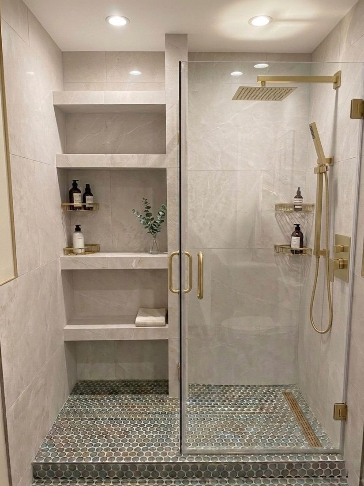
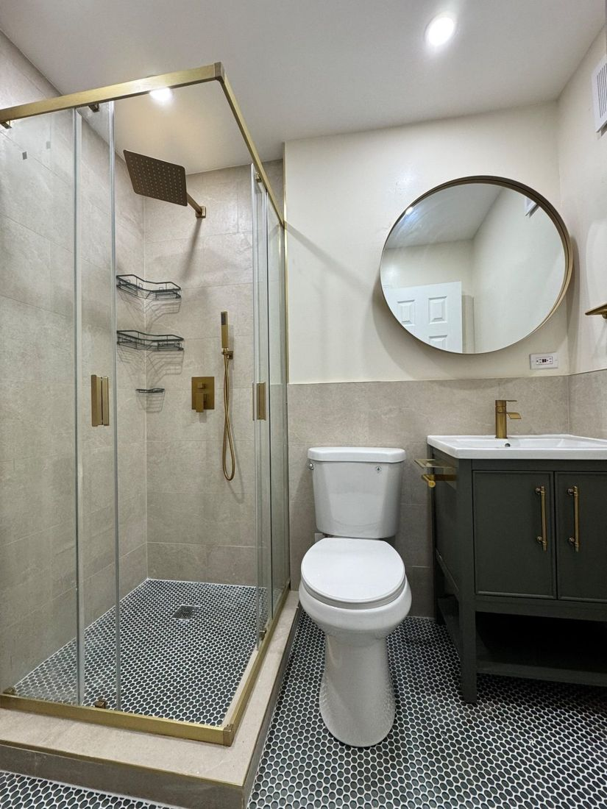
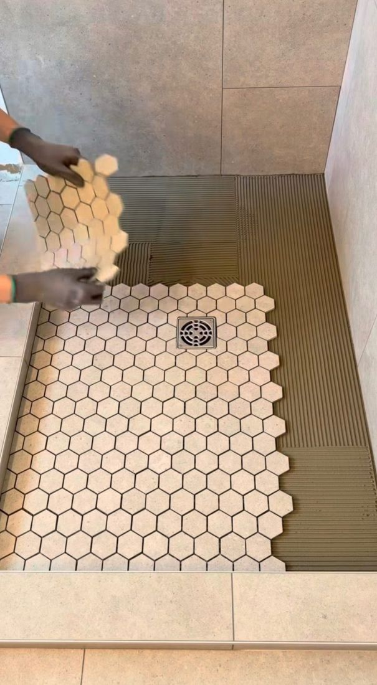
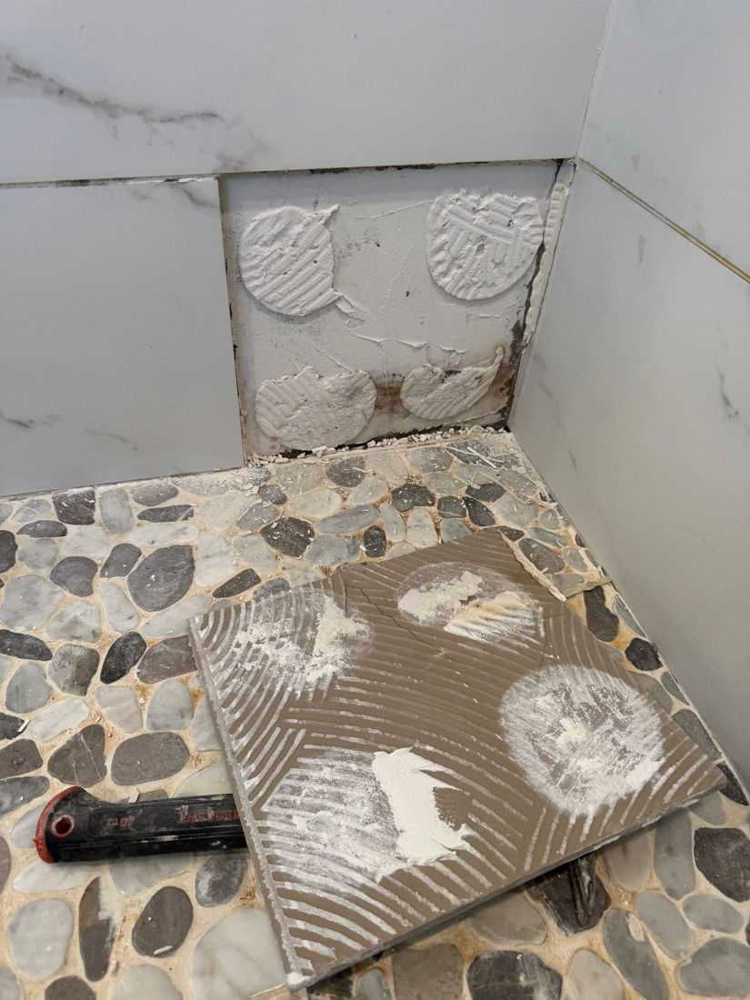
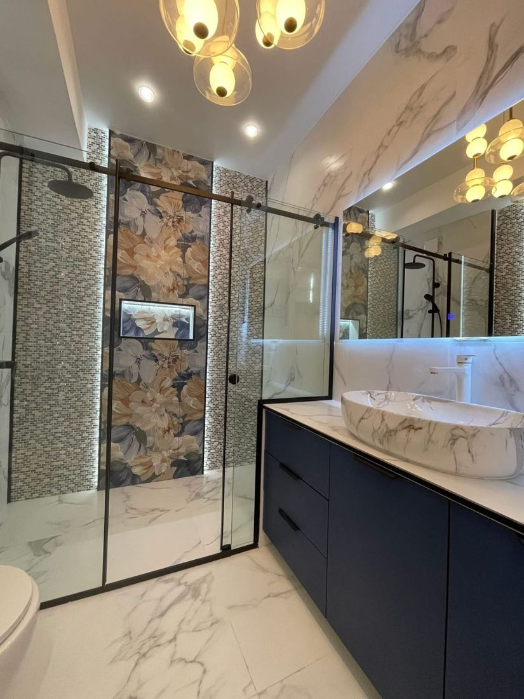

Shower Waterproofing & Shower Pan Replacement — Leaks Fixed at the Source
Stain on the ceiling below? Loose floor tile, grout that keeps cracking? We find where the water gets out, open only what has to come out, rebuild and waterproof the shower, and tile it back.
- Leaking shower repair
- Shower pan replacement
- Waterproof membrane
- Tub to shower conversion
- 3-year workmanship warranty

Waterproofed first, then tiled — one of our finished walk-in showers.
Six signs the water is getting out
A shower can leak for months before it shows. If you see any of these, have it checked before the damage spreads to the floor or the apartment below.
Four shower jobs, done properly
Tile is the finish. What keeps the water in is underneath it — that is the part we rebuild.
Shower waterproofing
A waterproof membrane on the walls and the floor, behind the tile, sealed at every corner, seam, niche and pipe.

Shower pan replacement
The old leaking pan comes out. We rebuild the slope to the drain, waterproof it and tile it again.

Leaking shower repair
We find where the water gets out — grout, drain, pan, valve or glass — and fix that, not only the stain.

Tub to shower conversion
The tub comes out and a waterproofed walk-in shower goes in, with glass and a built-in niche if you want one.

From leak to dry in five steps
You get the price and the schedule in writing before any work starts.
Inspection
We find where the water is getting out, and how far it has gone.
Written price
A fixed price for the scope — not an hourly guess.
Tear-out
Only what has to come out. Halls and floors protected.
Rebuild & waterproof
New pan and slope to the drain, membrane sealed at every seam, then tested with water.
Tile & finish
Tile, grout, glass and caulk — a shower that stays dry.
No need to re-tile the walls
If the pan is sound and the water comes through the grout on the walls, waterproof acrylic or PVC wall panels can go right over the old tile in 1–2 days — with no grout left to fail. We tell you at the estimate which one your shower needs.
Get a free shower estimate
Tell us what you see — a stain, a loose tile, a tub you want gone — and we will tell you what it needs. Serving Brooklyn and all five NYC boroughs, plus Long Island and Nassau County.
Frequently asked questions
The usual signs are a water stain on the ceiling below, floor tile that is loose or sounds hollow, grout that keeps cracking, a musty smell or mold that comes back after cleaning, and a soft floor or swollen baseboard outside the shower. In an apartment, a neighbor below often notices first.
Often, yes. If the water gets out through cracked grout or failed caulk, regrouting and resealing may be all it needs. If the shower pan or drain is leaking, we replace the shower floor and waterproof it, and the walls can often stay.
Tile and grout are not waterproof on their own. Shower waterproofing is the membrane behind the tile, on the walls and the floor, sealed at every corner, seam, niche and pipe, so water that gets through the grout goes to the drain instead of into the walls and the floor below.
Usually a few days. The old floor comes out, the new pan is built with the right slope to the drain, waterproofed and tested, and the materials need time to cure before the tile goes on. You get the schedule in writing with the price.
Yes. We take out the tub, move or adjust the drain, build and waterproof a new shower pan, tile it, and finish with a glass door or panel and a built-in niche if you want one. It is one of the most asked-for bathroom upgrades in NYC apartments.
Yes. Most of our shower work is in NYC apartments, co-ops and condos. We protect the halls, follow the building's work rules and hours, and can send the insurance certificate your board or management company asks for.
Yes. Sani Building Corp is fully insured, and our shower work carries a 3-year workmanship warranty.
Sani Building Corp is based in Brooklyn and serves all five NYC boroughs — Brooklyn, Manhattan, Queens, the Bronx and Staten Island — plus Long Island and Nassau County.